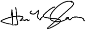

Hussien Y. Shousher
2013-2014 Chair
The University of Toledo Foundation
Board of Trustees
Brenda S. Lee
President
The University of Toledo Foundation
Dear Friends of The University of Toledo,
The most successful organizations explore opportunities for progress and advancement while also taking measures to ensure stability. For The University of Toledo Foundation, the 2014 fiscal year proved to be a time of both positive change and continuity.
Over the past year, the UT Foundation strengthened its leadership team through the newly created positions of chief operating officer, controller, and real estate director. The reorganization will better meet the Foundation’s changing needs through effective management of operations.
At the same time, the Foundation sustained its successful investment history, once again surpassing its benchmark. During 2014’s post-recession rebound, the Foundation achieved a 17.9 percent total return, ensuring support to UT in perpetuity.
That support wouldn’t be possible, however, without the generous foresight of UT’s alumni and friends. The past year was one of significant philanthropic support, with $17.8 million in contributions to the UT Foundation. Nearly $13.3 million was distributed to the University for scholarships, facilities, faculty and staff, and programs and services.
Your gifts ensure the continued success of the University’s programs and provide UT students with the tools to prosper. Through your contributions, you open doors and ensure a bright future for the entire UT community.
We remain thankful for all you do.
Sincerely,
Hussien Y. Shousher
Brenda S. Lee